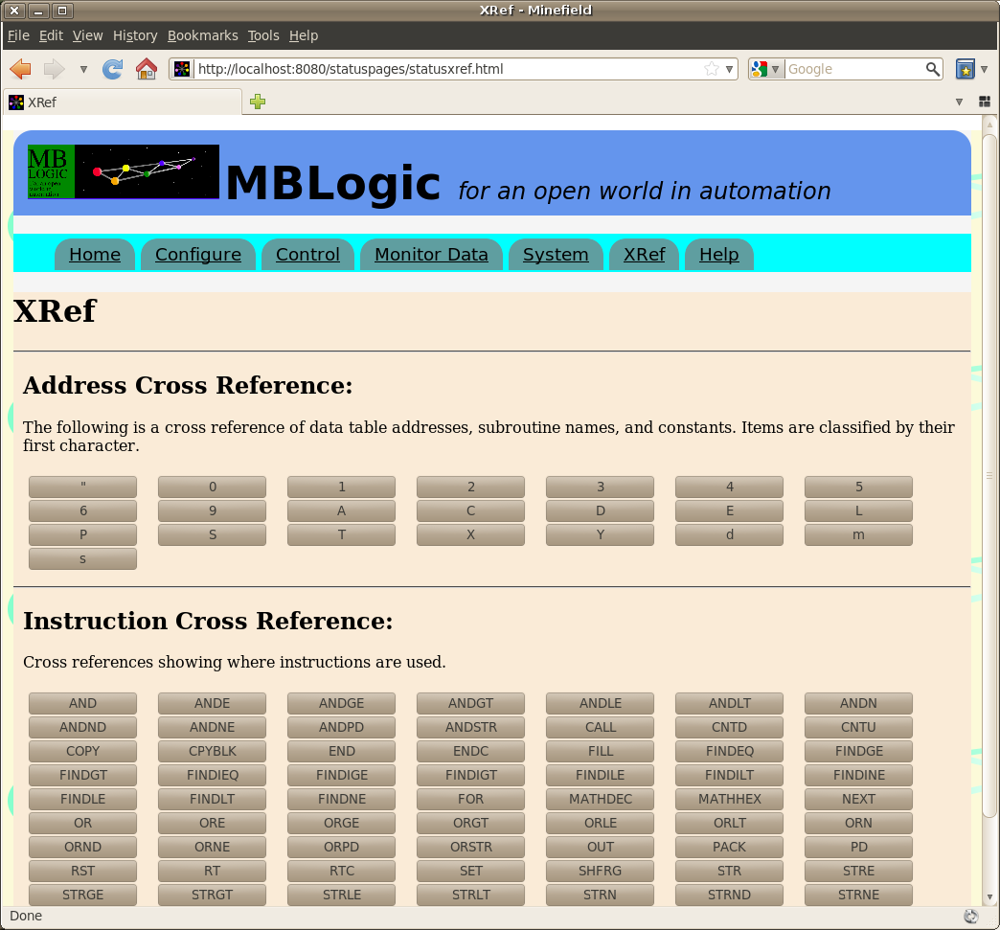
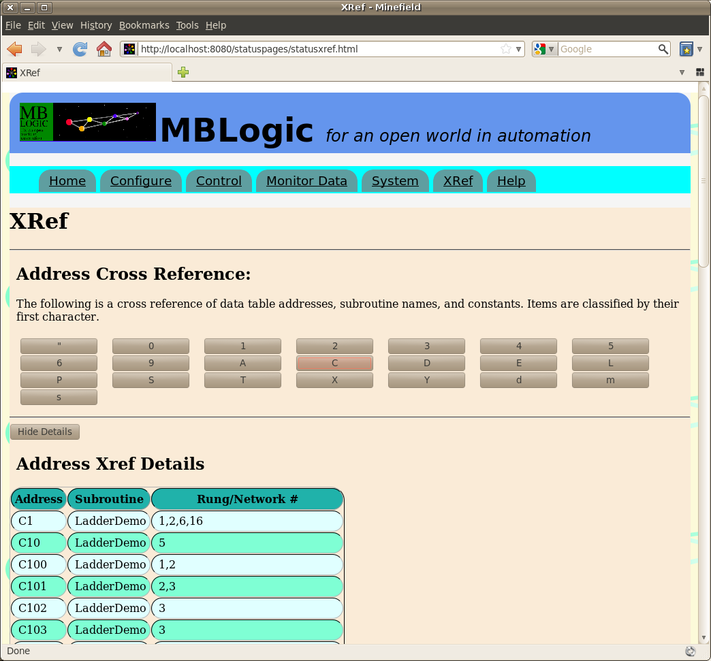
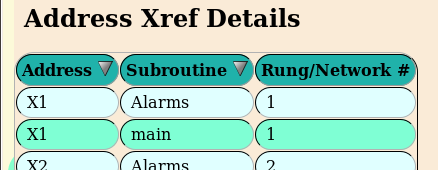

MBLogic
for an open world in automation
MBLogic
for an open world in automation
Help - Cross Reference
Overview
The "Cross Reference" page provides a cross reference of the soft logic program. The address cross reference shows addresses, constants, and subroutine names. The instruction cross reference shows instructions. Each cross reference shows the referenced items as a series of buttons. Press one of the buttons to see more details for that item.
The address cross reference categorises items by first character. Case is significant, so for example address "DS100" and subroutine name "datasub" are categorised separately. Details for the address cross reference will list the name (e.g. address), subroutine location, and rungs (networks) where they occur.
The instruction cross reference details will show the subroutine and rung (network where the instruction is used.


Display Order
The address cross reference table of data displayed can be sorted by clicking on a table heading. The table will be sorted according to the selected column. The address cross reference details table can be sorted by address or subroutine name (but not by rung/network #).
The instruction cross reference details table will be automatically sorted by subroutine name when displayed, but the sort order cannot be changed.
